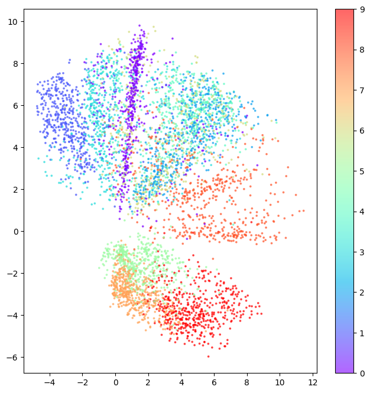
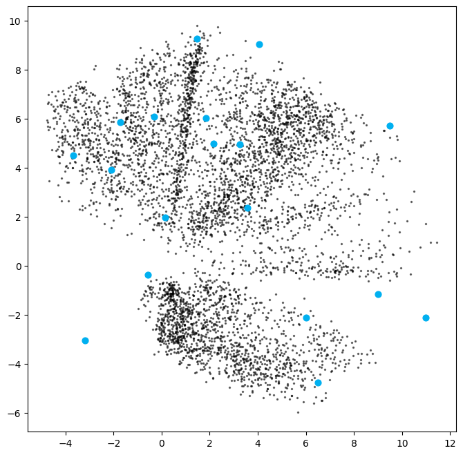

flowchart LR A(Encoder) --> B(z) B(z) --> c(Decoder)
Variational Autoencoders
These are notes from chapter 3 of Generative Deep Learning by David Foster.
Story Time
Imagine an infinite wardrobe organised by “type” of clothing.
Shoes would be close together, but formal shoes might be closer to the suits and trainers closer to the sports gear. Shirts and t-shirts would be close together. Coats might be nearby; the shirt->coat vector applied to t-shirts might lead you to “invent” gilets.
This encapsulates the idea of using a lower dimensional (2D in this case) latent space to encode the representation of more complex objects.
We could sample from some of the empty spaces to invent new hybrids of clothing. This generative step is decoding the latent space.
1. Autoencoders
The idea of autoencoders (read: self-encoders) is that they learn to simplify the input then reconstruct it; the input and target output are the same.
- The encoder learns to compress high-dimensional input data into a lower dimensional representation called the embedding.
- The decoder takes an embedding and recreates a higher-dimensional image. This should be an accurate reconstruction of the input.
This can be used as a generative model because we can the sample and decode new points from the latent space to generate novel outputs. The goal of training an autoencoder is to learn a meaningful embedding \(z\).
This also makes autoencoders useful as denoising models, because the embedding should retain the salient information but “lose” the noise.
2. Building an Autoencoder
We will implement an autoencoder to learn lower-dimensional embeddings for the fashion MNIST data set.
Code
import numpy as np
import matplotlib.pyplot as plt
import tensorflow as tf
from tensorflow.keras import layers, models, datasets, callbacks
# Parameters
IMAGE_SIZE = 32
CHANNELS = 1
BATCH_SIZE = 100
BUFFER_SIZE = 1000
VALIDATION_SPLIT = 0.2
EMBEDDING_DIM = 2
EPOCHS = 32.1. Load and pre-process the data
Scale the pixel values and reshape the images.
Code
(x_train, y_train), (x_test, y_test) = datasets.fashion_mnist.load_data()
def preprocess(images):
images = images.astype("float32") / 255.0
images = np.pad(images, ((0, 0), (2, 2), (2, 2)), constant_values=0.0)
images = np.expand_dims(images, -1)
return images
x_train = preprocess(x_train)
x_test = preprocess(x_test)Downloading data from https://storage.googleapis.com/tensorflow/tf-keras-datasets/train-labels-idx1-ubyte.gz
29515/29515 [==============================] - 0s 0us/step
Downloading data from https://storage.googleapis.com/tensorflow/tf-keras-datasets/train-images-idx3-ubyte.gz
26421880/26421880 [==============================] - 12s 0us/step
Downloading data from https://storage.googleapis.com/tensorflow/tf-keras-datasets/t10k-labels-idx1-ubyte.gz
5148/5148 [==============================] - 0s 0us/step
Downloading data from https://storage.googleapis.com/tensorflow/tf-keras-datasets/t10k-images-idx3-ubyte.gz
4422102/4422102 [==============================] - 2s 0us/stepWe can see an example from our training set:
Code
plt.imshow(x_train[0])
2.2. Build the Encoder
The encoder compresses the dimensionality on the input to a smaller embedding dimension.
Code
# Input
encoder_input = layers.Input(shape=(IMAGE_SIZE, IMAGE_SIZE, CHANNELS),name="encoder_input")
# Conv layers
x = layers.Conv2D(32, (3, 3), strides=2, activation="relu", padding="same")(encoder_input)
x = layers.Conv2D(64, (3, 3), strides=2, activation="relu", padding="same")(x)
x = layers.Conv2D(128, (3, 3), strides=2, activation="relu", padding="same")(x)
pre_flatten_shape = tf.keras.backend.int_shape(x)[1:] # Used by the decoder later
# Output
x = layers.Flatten()(x)
encoder_output = layers.Dense(EMBEDDING_DIM, name="encoder_output")(x)
# Model
encoder = models.Model(encoder_input, encoder_output)
encoder.summary()Model: "model"
_________________________________________________________________
Layer (type) Output Shape Param #
=================================================================
encoder_input (InputLayer) [(None, 32, 32, 1)] 0
conv2d (Conv2D) (None, 16, 16, 32) 320
conv2d_1 (Conv2D) (None, 8, 8, 64) 18496
conv2d_2 (Conv2D) (None, 4, 4, 128) 73856
flatten (Flatten) (None, 2048) 0
encoder_output (Dense) (None, 2) 4098
=================================================================
Total params: 96770 (378.01 KB)
Trainable params: 96770 (378.01 KB)
Non-trainable params: 0 (0.00 Byte)
_________________________________________________________________2.3. Build the Decoder
The decoder reconstructs the original image from the embedding.
Convolutional Transpose Layers
In a standard convolutional layer, if we have stride=2 it will half the image size.
In a convolutional transpose layer, we are increasing the image size. The stride parameter determines the amount of zero padding to add between each pixel. A kernel is then applied to this “internally padded” image to expand the image size.
Code
# Input
decoder_input = layers.Input(shape=(EMBEDDING_DIM,),name="decoder_input")
# Reshape the input using the pre-flattening shape from the encoder
x = layers.Dense(np.prod(pre_flatten_shape))(decoder_input)
x = layers.Reshape(pre_flatten_shape)(x)
# Scale up the image back to its original size. These are the reverse of the conv layers applied in the encoder.
x = layers.Conv2DTranspose(128, (3, 3), strides=2, activation="relu", padding="same")(x)
x = layers.Conv2DTranspose(64, (3, 3), strides=2, activation="relu", padding="same")(x)
x = layers.Conv2DTranspose(32, (3, 3), strides=2, activation="relu", padding="same")(x)
# Output
decoder_output = layers.Conv2D(
CHANNELS,
(3, 3),
strides=1,
activation='sigmoid',
padding="same",
name="decoder_output",
)(x)
# Model
decoder = models.Model(decoder_input, decoder_output)
decoder.summary()Model: "model_2"
_________________________________________________________________
Layer (type) Output Shape Param #
=================================================================
decoder_input (InputLayer) [(None, 2)] 0
dense_2 (Dense) (None, 2048) 6144
reshape_2 (Reshape) (None, 4, 4, 128) 0
conv2d_transpose_6 (Conv2D (None, 8, 8, 128) 147584
Transpose)
conv2d_transpose_7 (Conv2D (None, 16, 16, 64) 73792
Transpose)
conv2d_transpose_8 (Conv2D (None, 32, 32, 32) 18464
Transpose)
decoder_output (Conv2D) (None, 32, 32, 1) 289
=================================================================
Total params: 246273 (962.00 KB)
Trainable params: 246273 (962.00 KB)
Non-trainable params: 0 (0.00 Byte)
_________________________________________________________________2.4. Build the Autoencoder
Combine the encoder and decoder into a single model.
Code
autoencoder = models.Model(encoder_input, decoder(encoder_output))
autoencoder.summary()Model: "model_3"
_________________________________________________________________
Layer (type) Output Shape Param #
=================================================================
encoder_input (InputLayer) [(None, 32, 32, 1)] 0
conv2d (Conv2D) (None, 16, 16, 32) 320
conv2d_1 (Conv2D) (None, 8, 8, 64) 18496
conv2d_2 (Conv2D) (None, 4, 4, 128) 73856
flatten (Flatten) (None, 2048) 0
encoder_output (Dense) (None, 2) 4098
model_2 (Functional) (None, 32, 32, 1) 246273
=================================================================
Total params: 343043 (1.31 MB)
Trainable params: 343043 (1.31 MB)
Non-trainable params: 0 (0.00 Byte)
_________________________________________________________________2.5. Train the Autoencoder
The autoencoder is trained with the source images as both input and target output.
The loss function is usually chosen as either RMSE or binary cross-entropy between pixels of original image vs reconstruction.
Code
autoencoder.compile(optimizer="adam", loss="binary_crossentropy")
autoencoder.fit(
x_train,
x_train,
epochs=EPOCHS,
batch_size=BATCH_SIZE,
shuffle=True,
validation_data=(x_test, x_test)
)Epoch 1/3
600/600 [==============================] - 36s 59ms/step - loss: 0.2981 - val_loss: 0.2656
Epoch 2/3
600/600 [==============================] - 37s 61ms/step - loss: 0.2600 - val_loss: 0.2583
Epoch 3/3
600/600 [==============================] - 38s 63ms/step - loss: 0.2558 - val_loss: 0.2562<keras.src.callbacks.History at 0x297028990>3. Analysing the Autoencoder
We can use our trained autoencoder to:
- Reconstruct images
- Analyse embeddings
- Generate new images
3.1. Reconstruct Images Using the Autoencoder
Reconstruct a sample of test images using the autoencoder.
The reconstruction isn’t perfect; some information is lost when reducing down to just 2 dimensions. But it does a surprisingly good job of compressing 32x32 pixel values into just 2 embedding values.
Code
NUM_IMAGES_TO_RECONSTRUCT = 5000
example_images = x_test[:NUM_IMAGES_TO_RECONSTRUCT]
example_labels = y_test[:NUM_IMAGES_TO_RECONSTRUCT]
predictions = autoencoder.predict(example_images)157/157 [==============================] - 1s 9ms/stepOriginal images:
Code
def plot_sample_images(images, n=10, size=(20, 3), cmap="gray_r"):
plt.figure(figsize=size)
for i in range(n):
_ = plt.subplot(1, n, i + 1)
plt.imshow(images[i].astype("float32"), cmap=cmap)
plt.axis("off")
plt.show()
plot_sample_images(example_images)
Reconstructed images:
Code
plot_sample_images(predictions)3.2. Analyse the embeddings
Each of the images above has been encoded as a 2-dimensional embedding.
We can look at these embeddings to gain some insight into how the autoencoder works.
The embedding vectors for our sample images above:
Code
# Encode the example images
embeddings = encoder.predict(example_images)
print(embeddings[:10])157/157 [==============================] - 0s 2ms/step
[[ 2.329792 5.081217 ]
[ -3.5425975 -3.196322 ]
[-16.850313 10.458025 ]
[-13.082482 10.525161 ]
[ -2.4375374 -0.2749687 ]
[-10.373022 5.53389 ]
[ -3.6757205 2.3856945 ]
[ -2.994627 0.74553806]
[ -1.4679942 9.046445 ]
[ 1.2849879 9.3865385 ]]We can plot the 2D latent space, colouring each point by its label. This shows how similar items are clustered together in latent space.
This is impressive! Remember, we never showed the model the labels when training, so it has learned to cluster images that look alike.
Code
# Colour the embeddings by their label
example_labels = y_test[:NUM_IMAGES_TO_RECONSTRUCT]
# Plot the latent space
figsize = 8
plt.figure(figsize=(figsize, figsize))
plt.scatter(
embeddings[:, 0],
embeddings[:, 1],
cmap="rainbow",
c=example_labels,
alpha=0.6,
s=3,
)
plt.colorbar()
plt.show()
3.3. Generating New Images
We can sample from the latent space and decode these sampled points to generate new images.
First we sample some random points in the latent space:
Code
# Get the range of existing embedding values so we can sample sensible points within the latent space.
embedding_min = np.min(embeddings, axis=0)
embedding_max = np.max(embeddings, axis=0)
# Sample some points
grid_width = 6
grid_height = 3
sample = np.random.uniform(
embedding_min, embedding_max, size=(grid_width * grid_height, EMBEDDING_DIM)
)
print(sample)[[ -0.49943115 1.02098943]
[-16.65572441 6.96547782]
[-11.72685548 14.24565505]
[ -5.44522844 7.63668958]
[ 0.53313438 -3.95172388]
[ -4.18291681 0.13892611]
[ -8.97108471 -4.5148637 ]
[ -2.34931462 9.41724957]
[ -5.31146502 2.74073718]
[ -9.83316333 13.77455175]
[-14.54977666 9.52349768]
[-16.76102961 13.72802771]
[-12.3427831 5.1277622 ]
[-18.38723042 14.19956358]
[ -7.12388153 -1.41235603]
[ 2.59077578 -1.60023945]
[ 4.30528696 12.95034234]
[-14.32301235 15.41919473]]We can then decode these sampled points.
Code
# Decode the sampled points
reconstructions = decoder.predict(sample)1/1 [==============================] - 0s 51ms/steparray([[[[1.63236909e-05],
[2.90390130e-06],
[5.43164379e-06],
...,
[4.57848756e-07],
[4.09775168e-07],
[5.94741177e-05]],
[[1.18803644e-06],
[2.32933303e-07],
[1.06183370e-06],
...,
[1.37428330e-07],
[3.67753969e-08],
[1.21626326e-05]],
[[4.16460671e-06],
[4.63096967e-06],
[9.47717344e-05],
...,
[1.00781072e-04],
[2.14847796e-06],
[6.22331354e-05]],
...,
[[7.97207861e-07],
[3.45792728e-06],
[2.01895903e-03],
...,
[2.52830400e-03],
[9.69846496e-06],
[9.02931351e-05]],
[[2.08561858e-07],
[2.72046833e-07],
[1.48678164e-05],
...,
[2.22502672e-06],
[1.87276441e-07],
[1.36805993e-05]],
[[3.03991710e-05],
[1.71808369e-05],
[7.44444769e-05],
...,
[1.39519507e-05],
[3.72187651e-06],
[3.91025096e-04]]],
[[[3.48859552e-17],
[4.75370151e-19],
[8.98937538e-18],
...,
[1.15914002e-15],
[2.97793855e-17],
[3.39554795e-12]],
[[3.04463555e-21],
[3.65699785e-22],
[6.24295232e-19],
...,
[2.14110381e-16],
[1.83756557e-20],
[5.82498256e-14]],
[[1.07039259e-19],
[2.40445224e-17],
[9.81418558e-11],
...,
[2.69895661e-10],
[2.12531697e-16],
[2.63894310e-12]],
...,
[[7.09873347e-35],
[6.28466074e-30],
[1.94322148e-14],
...,
[2.22350402e-10],
[1.56591171e-13],
[8.46497761e-10]],
[[8.62318962e-34],
[3.58614099e-30],
[1.91546037e-18],
...,
[4.20077223e-15],
[4.56952199e-16],
[4.19501586e-11]],
[[2.54806445e-21],
[4.40923456e-20],
[1.51082997e-14],
...,
[6.25977482e-12],
[1.41048111e-12],
[4.78561439e-08]]],
[[[1.06899241e-20],
[4.85096477e-23],
[8.34942499e-22],
...,
[2.43039147e-18],
[7.76541649e-20],
[7.57926233e-14]],
[[1.44880863e-25],
[5.92251114e-27],
[1.22336652e-23],
...,
[7.31508438e-19],
[2.85722328e-23],
[8.73637352e-16]],
[[2.40200636e-23],
[7.45366553e-21],
[8.64334984e-14],
...,
[7.57713545e-11],
[8.31263990e-18],
[2.02787101e-13]],
...,
[[1.26213070e-34],
[8.05792189e-28],
[6.77919665e-11],
...,
[1.14610090e-08],
[1.90689532e-13],
[3.78936993e-10]],
[[1.80603586e-35],
[4.33894713e-31],
[2.08190317e-18],
...,
[5.14569593e-15],
[9.62266698e-16],
[6.38490857e-11]],
[[3.38649341e-23],
[1.08819790e-21],
[7.53881293e-16],
...,
[1.45968296e-12],
[1.25957870e-12],
[5.73432040e-08]]],
...,
[[[1.14409141e-02],
[4.04429389e-03],
[5.94330579e-03],
...,
[1.52589564e-04],
[1.68523518e-04],
[3.81657132e-03]],
[[3.00783711e-03],
[8.85234564e-04],
[2.20768712e-03],
...,
[9.57584634e-05],
[6.08509872e-05],
[1.76054344e-03]],
[[2.57944246e-03],
[1.18813571e-03],
[4.87227459e-03],
...,
[1.08896801e-02],
[1.38390542e-03],
[6.62241923e-03]],
...,
[[6.98678335e-03],
[4.42432240e-03],
[1.81216877e-02],
...,
[3.73369977e-02],
[2.79519911e-04],
[1.03694689e-03]],
[[4.55282954e-03],
[1.45832077e-03],
[1.65569806e-03],
...,
[5.34098654e-04],
[1.93739543e-05],
[2.77274376e-04]],
[[2.18557995e-02],
[7.83375837e-03],
[5.33270603e-03],
...,
[1.18058175e-03],
[1.57052127e-04],
[3.08558973e-03]]],
[[[1.91661289e-13],
[2.80343553e-15],
[5.79173304e-15],
...,
[1.55523110e-14],
[6.16173237e-14],
[2.57673460e-09]],
[[1.40150521e-16],
[3.20992255e-18],
[4.92417674e-17],
...,
[1.90860706e-15],
[3.47597758e-16],
[1.18012392e-10]],
[[3.35055317e-15],
[9.15232821e-15],
[4.00927512e-12],
...,
[3.22521065e-10],
[1.29657873e-12],
[2.96333780e-09]],
...,
[[4.19838872e-21],
[9.50531789e-20],
[2.81639360e-12],
...,
[3.14195024e-12],
[1.28090605e-12],
[3.50674441e-08]],
[[6.09088870e-21],
[6.69063294e-20],
[2.05994178e-14],
...,
[4.18583007e-12],
[2.67161033e-11],
[2.59599801e-07]],
[[1.06346057e-13],
[1.23503665e-13],
[4.08999119e-11],
...,
[3.91034582e-09],
[1.87179445e-08],
[2.47102271e-05]]],
[[[1.03007236e-22],
[2.97955130e-25],
[7.55196582e-24],
...,
[9.11860643e-20],
[1.52619246e-21],
[4.51792509e-15]],
[[4.45488204e-28],
[1.67742856e-29],
[9.51116405e-26],
...,
[2.56194476e-20],
[2.57298595e-25],
[3.48043390e-17]],
[[1.19272157e-25],
[9.46365946e-23],
[9.00637936e-15],
...,
[9.71548883e-12],
[2.05151041e-19],
[1.31166076e-14]],
...,
[[0.00000000e+00],
[1.13202022e-31],
[1.14732334e-12],
...,
[7.91147481e-10],
[7.72887918e-15],
[4.14370760e-11]],
[[0.00000000e+00],
[6.81408878e-35],
[1.46787691e-20],
...,
[1.39860505e-16],
[2.20253895e-17],
[4.99228913e-12]],
[[6.64629981e-26],
[3.77431762e-24],
[1.68866788e-17],
...,
[9.72009270e-14],
[6.94714062e-14],
[9.39310763e-09]]]], dtype=float32)Code
figsize = 8
plt.figure(figsize=(figsize, figsize))
# Plot the latent space and overlay the positions of the sampled points
plt.scatter(embeddings[:, 0], embeddings[:, 1], c="black", alpha=0.5, s=2)
plt.scatter(sample[:, 0], sample[:, 1], c="#00B0F0", alpha=1, s=40)
plt.show()
# Plot a grid of the reconstructed images which decode those sampled points
fig = plt.figure(figsize=(figsize, grid_height * 2))
fig.subplots_adjust(hspace=0.4, wspace=0.4)
for i in range(grid_width * grid_height):
ax = fig.add_subplot(grid_height, grid_width, i + 1)
ax.axis("off")
ax.text(
0.5,
-0.35,
str(np.round(sample[i, :], 1)),
fontsize=10,
ha="center",
transform=ax.transAxes,
)
ax.imshow(reconstructions[i, :, :], cmap="Greys")

Now let’s see what happens when we regularly sample the latent space.
Code
# Colour the embeddings by their label (clothing type - see table)
figsize = 12
grid_size = 15
plt.figure(figsize=(figsize, figsize))
plt.scatter(
embeddings[:, 0],
embeddings[:, 1],
cmap="rainbow",
c=example_labels,
alpha=0.8,
s=300,
)
plt.colorbar()
x = np.linspace(min(embeddings[:, 0]), max(embeddings[:, 0]), grid_size)
y = np.linspace(max(embeddings[:, 1]), min(embeddings[:, 1]), grid_size)
xv, yv = np.meshgrid(x, y)
xv = xv.flatten()
yv = yv.flatten()
grid = np.array(list(zip(xv, yv)))
reconstructions = decoder.predict(grid)
# plt.scatter(grid[:, 0], grid[:, 1], c="black", alpha=1, s=10)
plt.show()
fig = plt.figure(figsize=(figsize, figsize))
fig.subplots_adjust(hspace=0.4, wspace=0.4)
for i in range(grid_size**2):
ax = fig.add_subplot(grid_size, grid_size, i + 1)
ax.axis("off")
ax.imshow(reconstructions[i, :, :], cmap="Greys")8/8 [==============================] - 0s 18ms/step3.4. The Limitations of Autoencoders
The latent space exploration above yields some interesting insights into “regular” autoencoders that motivate the use of variational autoencoders to address these shortcomings.
- Different categories occupy varying amounts of area in latent space.
- The latent space distribution is not symmetrical or bounded.
- There are gaps in the latent space.
This makes it difficult for us to sample from this latent space effectively. We could sample a “gap” and get a nonsensical image. If a category (say, trousers) occupies a larger area in latent space, we are more likely to generate images of trousers than of categories which occupy a small area (say, shoes).
4. Variational Autoencoders
Story Time
If we revisit our wardrobe, rather than assigning each item to a specific location, let’s assign it to a general region of the wardrobe.
And let’s also insist that this region should be as close to the centre of the wardrobe as possible, otherwise we are penalised. This should yield a more uniform latent space.
This is the idea behind variational autoencoders (VAE).